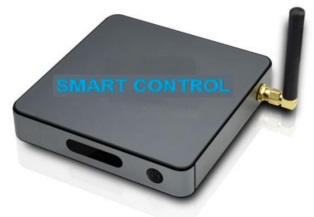
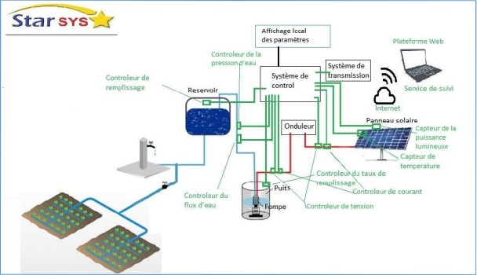
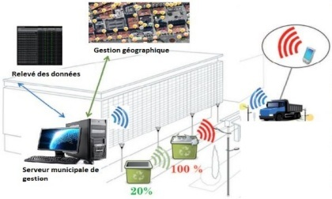
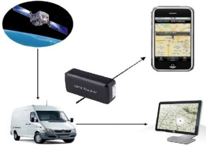
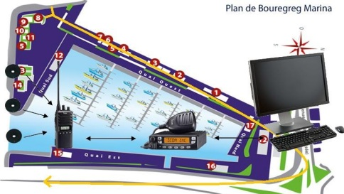

Notre Expertise en Action
2023 | ERP "DigitSchool"
Développement d'un ERP complet pour la gestion d'écoles d'ingénieurs.
2020 | Managem (SAMINE)
Système de contrôle à distance et suivi de consommation pour ventilateurs de mines.
2019 | Ministère de l'Énergie, Maroc
Outil de monitoring et de télé-suivi pour les systèmes de pompage solaire.
2017 | Ville de Niamey, Niger
Projet "Smart City" pour le suivi et l'optimisation de la collecte des déchets.
2016 | Solution de Suivi Véhicules pour CAR4ALL
Développement d'une solution Web pour le suivi des itinéraires de véhicules.
2014 | Marina de Bouregreg
Installation d'un système de contrôle de ronde RFID pour la sécurisation du site.
